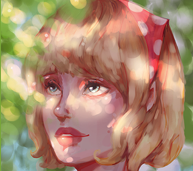

Momentální Výstavy
-----> www.upm.cz/sperk-forma-obsah
Výstava propojuje historické i současné šperky ze sbírek Uměleckoprůmyslového musea v Praze. Tuto kolekci doplňují šperky autorů a soukromých sběratelů, aktuálně nošené či uchovávané jako památka. Výbojná i konvenční díla libovolné datace svým setkáním upozorňují na různá sdělení, která mohou šperky nést. V první části výstava přináší téma času – šperky s tvarem nekonečné smyčky, pohyblivá díla včetně mechanických hodinek i šperky z materiálů, které degradují časem, například led nebo mýdlo. V druhé části se výstava soustředí na šperky, které zobrazují jednotlivé figury i výjevy s více aktéry, stejně tak izolované motivy nebo útržky scén. Často jde o motivy užívané napříč staletími, třeba Eróta/Amora a jeho šípu. Celý obraz vzniká až spojením šperku s lidským tělem. Závěr výstavy patří dílům, která naznačují ideje šperkových instalací stálé expozice UPM ART, LIFE. Umění pro život. Zvou diváka, aby pokračoval k expozičním okruhům Šperk a světlo (v sále E) a Šperk a tělo (v sále D). Výstavu doprovází stejnojmenná kniha Šperk – forma – obsah. I ona v kapitolách Šperk a čas, Šperk a světlo, Šperk a tělo a Šperk a figura pojednává ideje jak výstavy, tak stálé expozice UPM. Muzejní web a sociální sítě obohacují výběr vystavených a publikovaných děl o práce studentů českých a slovenských vysokoškolských ateliérů zaměřených na šperk.

Tato výstava propojuje moderní pochopení barev a nového světa, v jejíž psycholdelických krků se nachází naprosto nový styl. Tato výstava se sice nezaměřuje přímo na šperk nebo klenoty jako takové, ale protože nám přišlo že hlavní zaměření této výstavy je hodný naší pozornosti. Tato kolekce se nedá momementálně zhlédnout v Praze ani okolí, ale je možné shlédnout její digitalní verzy.
Sbírka různě pojaté grafiky. Od simplistických designů, až po fotorealistické kombinace, křiklavě barevné až minimalisticky klidné. Ukázky že Umění šperků může mít tolik form, kolik jen autor v 10 min vymyslí a v 5 nakreslí. Tato stránka potřebuje více obsahu. Výstava se koná vyhradně online, s komplexiními příblíženimi. Dosud nebyla stvořena hmotná sbírka na toto téma, i když se v planujete v blízké budoucnosti přidat do muzea ,,UŽ-MNĚ-NIC-NENAPADÁ" které se má otevřít 3 května příštího roku. Mělo by se jednat o stálou expozici. Do té doby si však budem muset vystačit pouze s elektronickou verzí těchto fascinujicích výtvorů.
